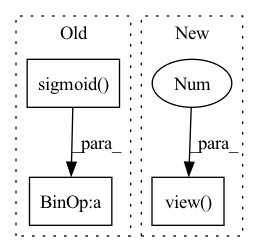

Pattern ID :658

Before Change
logit_softmax = F.softmax(logit, dim = 1)
diff = -(logit.diag().view(-1, 1).expand_as(logit) - logit)
loss = torch.mean(logit_softmax * (torch.sigmoid(diff) + torch.sigmoid(logit ** 2)))
return loss
After Change
negative_mask: (//pos_target, //neg_samples) : specify the subset of negative items for each positive target
positive_mask = ~negative_mask
positives = logits_scores.diag().view(-1, 1).expand_as(logits_scores)
diff = positives - logits_scores
penalization = torch.sigmoid(logits_scores ** 2)
loss = torch.sigmoid(-diff) + penalization
In pattern: SUPERPATTERN
Frequency: 3
Non-data size: 3
Instances
Fragment ID: 2398471
Project Name: nvidia-merlin/transformers4rec
Commit Name: 58b4bf9dfdc2fe5ce6c90ac57f4db71224268942
Time: 2021-02-19
Author: gmoreira@nvidia.com
File Name: codes/loss_functions.py
M Class Name: TOP1_max
N Class Name: TOP1_max
M Method Name: forward(3)
N Method Name: forward(2)
M Parent Class: nn.Module
N Parent Class: nn.Module
M File Name: codes/loss_functions.py
N File Name: codes/loss_functions.py
M Start Line: 96
M End Line: 99
N Start Line: 116
N End Line: 134
'>
Before Change
logit_softmax = F.softmax(logit, dim = 1)
diff = -(logit.diag().view(-1, 1).expand_as(logit) - logit)
loss = torch.mean(logit_softmax * (torch.sigmoid(diff) + torch.sigmoid(logit ** 2)))
return loss
After Change
negative_mask: (//pos_target, //neg_samples) : specify the subset of negative items for each positive target
positive_mask = ~negative_mask
positives = logits_scores.diag().view(-1, 1).expand_as(logits_scores)
diff = positives - logits_scores
penalization = torch.sigmoid(logits_scores ** 2)
loss = torch.sigmoid(-diff) + penalization
'>
Fragment ID: 2398465
Project Name: nvidia-merlin/transformers4rec
Commit Name: da9442ba125855b2a0630c905ad4da0def19be70
Time: 2021-02-21
Author: gmoreira@nvidia.com
File Name: codes/loss_functions.py
M Class Name: TOP1_max
N Class Name: TOP1_max
M Method Name: forward(3)
N Method Name: forward(2)
M Parent Class: nn.Module
N Parent Class: nn.Module
M File Name: codes/loss_functions.py
N File Name: codes/loss_functions.py
M Start Line: 96
M End Line: 99
N Start Line: 116
N End Line: 134
'>
Before Change
ingate = F.sigmoid(ingate)
forgetgate = F.sigmoid(forgetgate)
cellgate = F.tanh(cellgate)
outgate = F.sigmoid(outgate)
cy = (forgetgate * cx) + (ingate * cellgate)
hy = outgate * F.tanh(cy)
return hy, cy
After Change
def forward(self, input, hidden):
hx, cx = hidden
gates = self.linear(input).view(-1, self.gate_channels, self.grid_size, self.grid_size, self.grid_size) \
+ self.conv3d(hx)
ingate, forgetgate, cellgate = gates.chunk(3, 1)
ingate = F.sigmoid(ingate)
'>
Fragment ID: 2398456
Project Name: alex-golts/pytorch-3d-r2n2
Commit Name: 42737c9c8462261f2592aa0f49ef999bfbbe38b4
Time: 2018-05-15
Author: alexgbiz@gmail.com
File Name: modules/conv_rnn.py
M Class Name: Conv3dLSTMCell
N Class Name: Conv3dLSTMCell
M Method Name: forward(3)
N Method Name: forward(3)
M Parent Class: nn.Module
N Parent Class: nn.Module
M File Name: modules/conv_rnn.py
N File Name: modules/conv_rnn.py
M Start Line: 145
M End Line: 155
N Start Line: 49
N End Line: 57